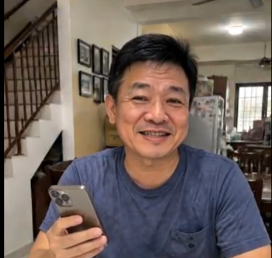

智能科技连接家庭温情：用手机分享日常，让家人的爱随时相伴
在这个信息飞速发展的时代，科技最大的魅力在于拉近了心与心之间的距离。对于许多家庭来说，一部小小的智能手机，早已成为串联起三代人温情与欢笑的桥梁。
悠闲的午后，坐在舒适温馨的客厅里，与远在异地工作或求学的孩子们开个视频通话，听听他们分享生活中的喜怒哀乐，看着屏幕那头灿烂的笑容，整个屋子里都洋溢着满满的幸福感。
1. 打造温馨家庭沟通的三个幸福习惯
善用便捷的数字工具，能让家庭成员之间的感情在不知不觉中升温：
定时视频问候： 约定每周的固定时间视频连线，互相关心近况，让牵挂变成看得见的陪伴。
随时分享日常照片： 在家庭群组里分享一道刚做好的美味家常菜或美好的风景照，传递生活中的微小喜悦。
用文字与语音表达关怀： 一句简单的“注意身体”或“晚安”，都能给忙碌一天的家人带来无限的温暖与支持。

2. 屏幕里的温馨：让关心无处不在
当手里拿着智能手机，看着屏幕上跳出的孙辈近照或孩子们发来的问候语音，脸上不自觉地绽放出灿烂而满足的笑容。这种随时随地的连接，让家不再只是一个地理概念，而是一种无处不在的陪伴。
简单便利的技术操作，降低了长辈们融入数字生活的门槛。只需轻松一点，就能跨越千山万水，感受到家人们最真挚的爱与挂念，让居家生活变得更加丰富多彩。
“科技最大的价值，在于让远在天边的挂念，化作触手可及的陪伴；一机在手，爱就在身边。”
在有爱的家庭里，交流从不繁琐。一次温馨的通话、一张温馨的照片，都能让温暖的光芒照亮日常生活中的每一个角落。
总结
拥抱现代科技带来的便利，用爱与陪伴填满日常岁月的每一个瞬间。让我们多花一点时间与家人交流，用真诚的问候与微笑，共同构筑温馨和谐的幸福生活。
本故事旨在传递家庭和睦、智能科技连接亲情与积极乐观的生活理念。